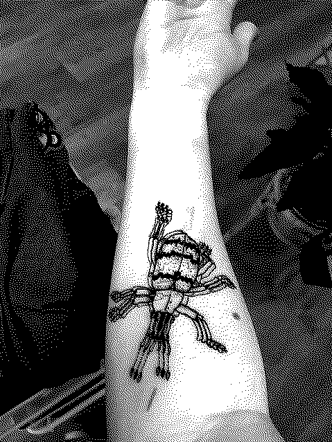

Selfsadist
I got a tattoo two weeks ago today! That's right, on April Fools! I was anxious in the days leading up to it because I have a lot of anxiety around pain, or even just anticipating pain or unpredictable sensations, but it ended up being a really wonderful experience. Here's the design:

To keep the monochrome theme of this blog consistent, I'll simply link to where I've posted the finished version elsewhere. Anyways, my friend Tom got a similar insect tattoo and when I saw how his came out I had this sudden certainty... Last year I got my ear pierced as one of my new years' resolutions but, while I had always vaguely considered more piercings or a tattoo, I didn't want to make it a resolution because I wasn't sure what the next thing I'd want would be. But when I saw how Tom's tattoo turned out I was sure.
Natalia Rainy is a super talented artist and as soon as I saw the iPad sketch of the design I knew it was perfect-- an adorable design of an insect I'm frankly kind of obsessed with. I was so excited. I'd channeled my nerves into making sure I'd had a big breakfast that day, brought snacks and lucozade to the appointment, and was prepared for anything, but it was a relief of course that the design was even cooler than I could have imagined. I got the lineart transferred on to me and then soon enough it was time to start tattooing...
The first two or three lines after each break sting the most, but they were just that to me, stinging. Your body gradually adjusts to the semi-continuous irritation, and while the pain still registers, it's almost relaxing in the way listening to white noise or being under a really heavy blanket is. Weirdly, I felt focused enough to chat casually (and Natalia is super friendly!), or just chill out quietly, and I could pull myself into a relaxed state by moving my focus between the feeling of the needles in my arm and a heavy pendant Natalia was wearing that rested in my hand from the angle she had to lean over me to do the tattoo.
Time seemed to pass fairly quickly, I didn't get bored. But sometimes, after a while, and especially when filling in the colors with the larger needle, the pain would start to feel like a pressure pushing down my whole arm. This was the closest it got to being genuinely uncomfortable. When we took a break between phases of the lineart or different colors, and I got up to stretch and grab a bit of a snack, I'd have to go through the initial scratching pain again but soon would get back into the groove.
I pick at the skin around my fingers a lot, often absentmindedly. I seem to do it a lot when I'm bored, anxious or need to focus on something. It's like the slight pain and repetitive action takes up a bit of my brain that is usually too errant or unfocused, and sharpens it. This means a bit of me, even though I'm scared of and dread pain, also desires and enjoys a controlled version of it. Even though I was numbed up to hell and back for my unexpected tooth extraction, the unpleasant feelings and sounds that you don't really have any control over in the dentist's chair made it a miserable experience. The tattoo was quantitatively more painful, but I felt in control. I wanted to do it because I wanted to go through something positive to change my body in a nice way, rather than a scary and unpleasant change happening to me.
It feels weird to call this relationship to pain "masochism," which kind of implicitly refers to situations where you're getting off on it being done to you by a different person. It's more like selfsadism, I pick the pain and apply it to myself, and it can be clarifying, enjoyable, trance-inducing... which isn't to say it's all good. I'm desperate to stop the skin picking stuff sometimes because it gets bloody and too painful. But this definitely took my mind off it for three hours, and left me feeling strangely calm. Can I just doodle on myself?
What have I been up to besides that interesting bit of information about myself? During the month of March I did tarot draws from the recently reprinted Hexen 2.0 Tarot by Suzanne Treister. It's a very fascinating (and funny) deck that I think allowed me to really have some productive thoughts about my values and what I want from technology, amidst a period of strong (and understandable) pessimism about technology and "online." I hope to soon have a few features I can add to the blog that will let me include tarot posts but also the breakneck speed of gigs we've been going to, my book reviews, etc, alongside the main posts.
Domino Club has also just released its new jam games: Domino: Declassified!! I may have made or contributed to one or various of these... but can't reveal that quite yet ;) ... Still, check them out!
My first novel, More Bugs remains available in print at various bookstores around the UK or in electronic format through the publisher's site. If you enjoyed it a review on Goodreads, Storygraph or Bookwyrm helps it look "buzzy" if you have an account for any of those. I've also officially finished a full revision pass of Novel 2 (finally!) and am actively sending it off to publishers and agents now. It's good to mentally release it to an extent, because now I'm free to work on research and daydreaming for novel 3! Definitely let me know if you have any additional sources on hypnotism, UFO culture, or devil's threesomes... I may even try getting irl hypnotized for this skin picking stuff... can't hurt, right?